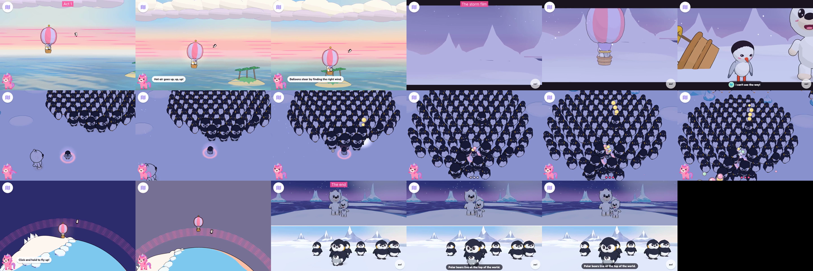

The Poles' new ending: the whole chapter, ready for Kaylee
Hand her the iPad at the first link, say as little as you can, and screen-record with the mic on (Control Center: hold the record button, turn on Microphone). If she asks what to do: "I don't know, what do you think?" Send me the video when she's done, or tell me what you saw. She flies the balloon down the world, sings everyone into a chorus in the dark, leads Pebble through a huddle of hundreds to Papa, then flies Pola home: about 7 minutes of play and 4 of film.
Watch
Pictures

Hear the script
Poles › Night
Your call
The whole ending is about 11 minutes with its films (she can stop between acts and pick up there next time). Too long for one sitting, or fine?
The last film splits the screen: Pola up top at night, Pebble below in the sun. Sweet, or confusing for her?
What did Kaylee do or say that I should fix first? (A word is fine.)
Play it yourself (optional)
Kaylee's playtest: the ending from the start Act 1, Hold to Fly Act 2, Sing in the Dark Act 3, Through the Huddle Goodbye: fly Pola home The end (split screen) Feel lab: the balloon (also the leading) The Mac's words (click, not tap)